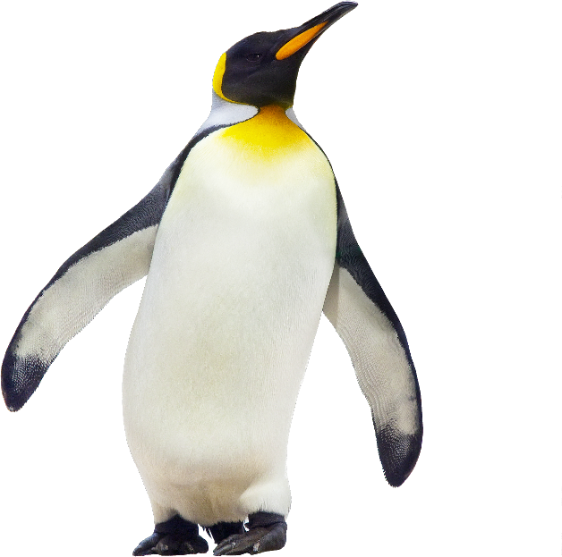
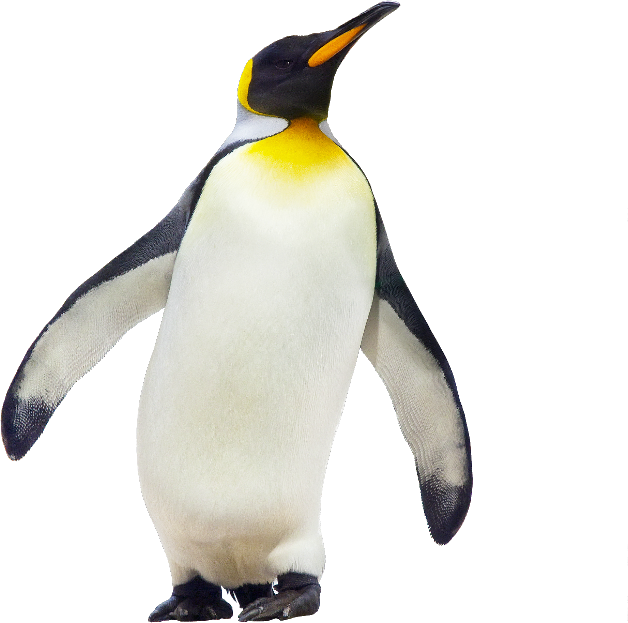

Emperor Penguin
Aptenodytes forsteri
Though they are birds, penguins have flippers instead of wings. They cannot fly and on land they waddle walking upright—though when snow conditions are right they will slide on their bellies. In the water they are expert swimmers and divers, and some species can reach speeds of up to 15 miles per hour. The penguin’s distinctive coloring—black body with white belly—helps camouflage the bird in the water as it searches for meals of small shrimp, fish, crabs and squid.
Penguins may not be able to fly across the sky, but they can fly underwater as well as any fish. Instead of wings, these birds have flippers that can propel their streamlined bodies up to 15 miles per hour through the sea in pursuit of a meal.

 



STATUS:
Vulnerable
POPULATION:
22,000 to 31,000
HABITAT:
Oceans & Coasts
THREATS
RISING TEMPERATURES
Climate change is a growing concern for penguins that live in Antarctica—the emperor penguin and the Adelie penguin. These species depend on sea ice for access to food and for places to breed. But the sea ice has been disappearing, and penguin populations along with it. A 2008 WWF study estimated that 50% of the emperor penguins and 75% of the Adelie penguins will likely decline or disappear if global average temperatures rise above pre-industrial levels by just 2 degrees C—a scenario that could be reached in less than 40 years.
The species is threatened by the effects of projected climate change, primarily through ongoing and future decreases in sea ice concentration, thickness and duration, which are affected by wind speed and persistence, as well as changes in other climatic variables that affect ocean properties. Global emissions of CO2 from fossil fuels and industry have increased on average by >1.5% per year between 2008 and 2017, and by 1.7% in 2018 leading to a concentration of 407.4 ppm in the atmosphere, despite reductions in some developing countries. Similarly, atmospheric methane has grown very rapidly each year between 2014 and 2017, and the climate warming impact of methane, if continued at >5 ppb per year in the coming decades, will be highly significant.
OIL IN THE ARCTIC
Oil development in the Arctic poses a wide of range of threats to Polar Bears ranging from oil spills to increased human-bear interactions. It is probable that an oil spill in sea ice habitat would result in oil being concentrated in leads and between ice floes resulting in both Plar Bears and their main prey (Ringed Seal and Bearded Seal) being directly exposed to oil. Polar Bears are often attracted by the smells and sound associated with human activity. Polar Bears are known to ingest plastic, styrofoam, lead acid batteries, tin cans, oil, and other hazardous materials with lethal consequences in some cases (Lunn and Stirling 1985, Amstrup et al. 1989, Derocher and Stirling 1991). Another concern is that seals covered in oil may be a major source of oil to polar bears. Although the biological threats and impacts of oil and gas activities on Polar Bears are reasonably well understood (Øritsland et al. 1981; Hurst and Øritsland 1982; Stirling 1988, 1990; Isaksen et al. 1998; Amstrup et al. 2006), mitigation and response plans are currently lacking (but see Wilson et al. 2014). Moreover, how Polar Bears will be affected by other types of human activity are less well known

How Can I Help?

Call Your Representatives
100 companies are responsible for 71% of global emissions. Urge your congresspeople to pass legislation preventing corporations from destroying our planet.

Reduce Your Footprint
Commit to reducing food waste, electricity use, and walk, bike, or take public transportation. Buy only what you need and recycle what you no longer do.

Donate
Companies like IUCN Red List & World Wildlife Fund are committed to protecting habitats threatened by Climate Change and the animals that live there.